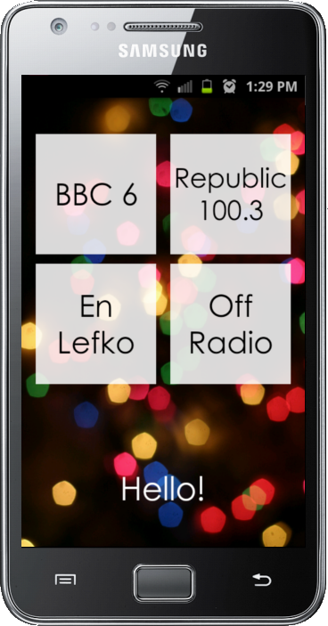
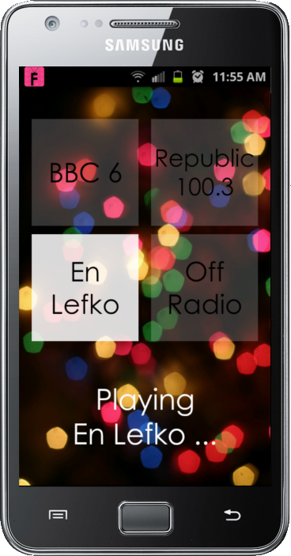
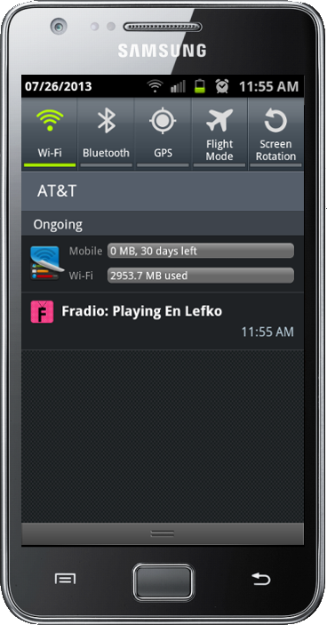

Fradio
Fradio is an Android app to play custom radio stations with the touch of one button.
It basically is a personal project to save me some time when I want to listen to something :)
For a simplified version with one button, check out the code on github.


